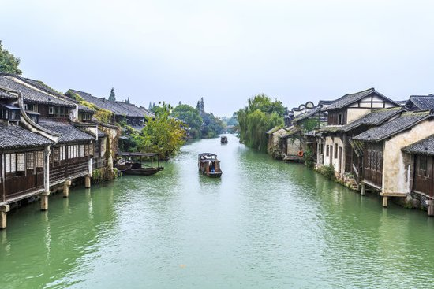
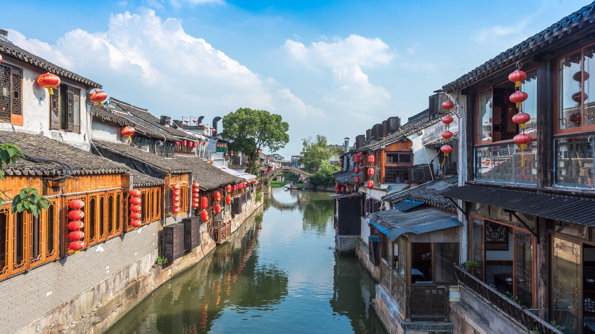
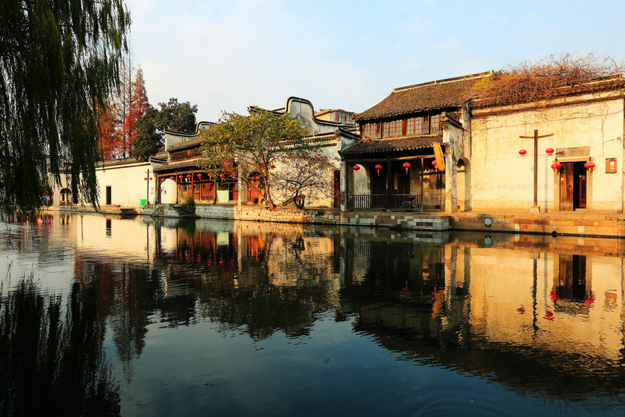

morly旅游网
一说浙江省，你肯定想到了美丽的杭州西湖，还有就是江南皮革厂，想过去美丽的浙江吗？
境内最大的河流钱塘江，因江流曲折，称之江、折江，又称浙江，省以江名，简称“浙”，浙江省东西和南北的直线距离均为450公里左右。
据全国第二次土地调查结果，浙江土地面积10.55万平方公里，为全国的1.10%，是中国面积最小的省份之一。
浙江是吴越文化、江南文化的发源地，是中国古代文明的发祥地之一。
杭州
简称“杭”，浙江省省会、副省级市，位于中国东南沿海、浙江省北部、钱塘江下游、京杭大运河南端，是浙江省的政治、经济、文化、教育、交通和金融中心，长江三角洲城市群中心城市之一、长三角宁杭生态经济带节点城市、中国重要的电子商务中心之一，新一线城市。
宁波
宁波，简称甬，副省级市、计划单列市，有制订地方性法规权限的较大的市，首批沿海开放城市，中国海滨城市，中国大陆综合竞争力前15强城市，长三角五大区域中心之一，长三角南翼经济中心，浙江省经济中心，现代化国际港口城市，国家历史文化名城，连续四次蝉联全国文明城市，中国著名的院士之乡。
 温州
浙江省辖地级市，简称"瓯";浙江省三大中心城市之一。温州历史悠久，有2000余年的建城历史。是中国民营经济发展的先发地区与改革开放的前沿阵地，在改革开放初期，以"南有吴川，北有温州"享誉全国。
绍兴
浙江省下辖的一个地级市。绍兴从新石器时代中期的小黄山文化开始，至今已有约9000年历史。越国古都建于公元前490年，距今已有2500多年建城史。1983年7月，撤销绍兴地区，改设省辖绍兴市。
浙江是中国经济最活跃的省份之一，在充分发挥国有经济主导作用的前提下，以民营经济的发展带动经济的起飞，形成了具有鲜明特色的“浙江经济”，至2013年人均居民可支配收入连续21年位居中国第一。
浙江省下辖杭州、宁波、温州、绍兴、湖州、嘉兴、金华、衢州、舟山、台州、丽水11个城市，其中杭州、宁波（计划单列市）为副省级城市；下分90个县级行政区，包括36个市辖区、20个县级市、34个县（含1个自治县）。
内容整理至网络，如有侵权，请联系我们！1255394075@qq.com